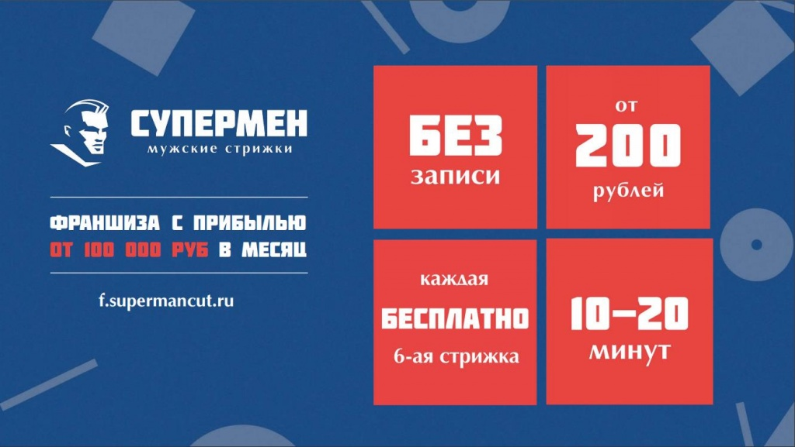
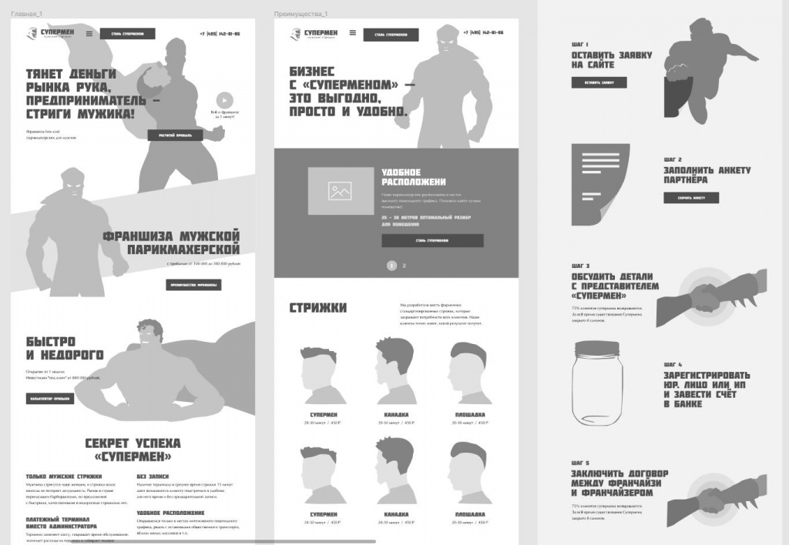
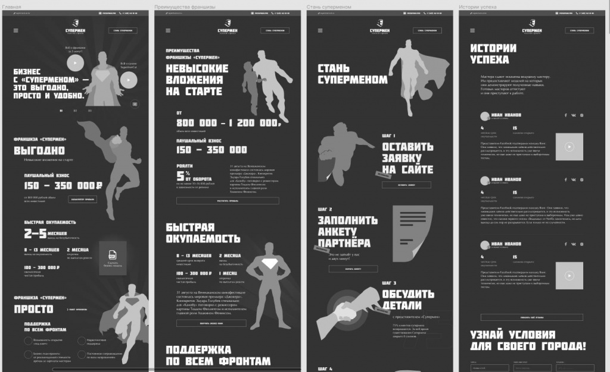
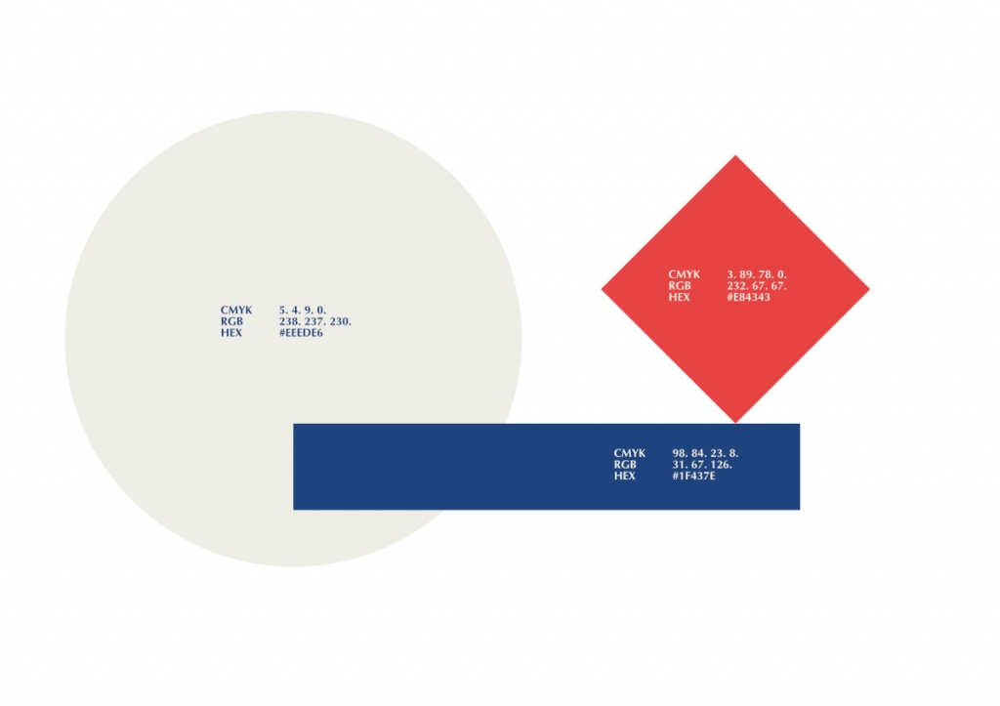
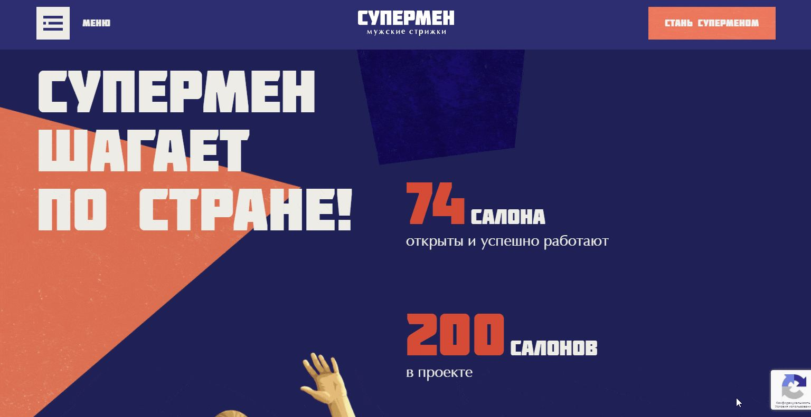
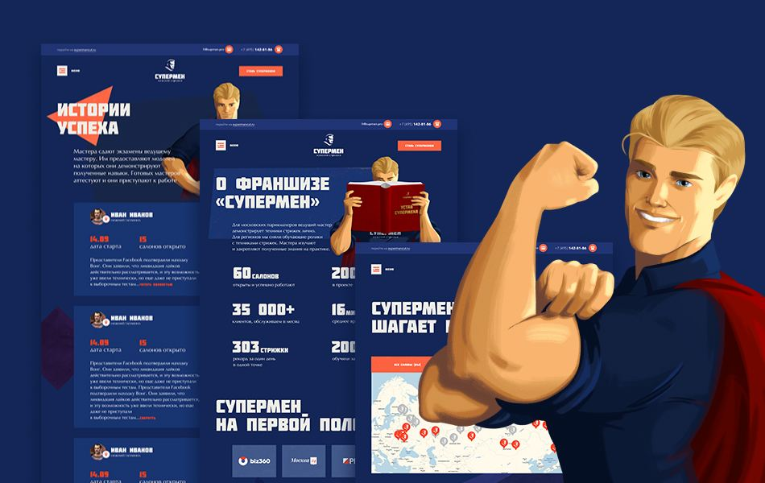
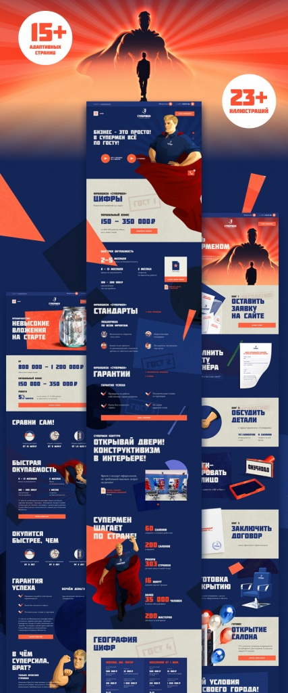

Расположены в местах высокого пешеходного трафика, “по пути”.
Время стрижки: 10-20 минут. Без записи.
Шесть стрижек и бритьё (и бесконечное количество вариаций!).
Терминал вместо администратора.
Каждая шестая стрижка в подарок, ветеранам — бесплатно всегда.

Цель
Показать франшизу со всех сторон. Донести модель и масштаб, показать преимущества, подкрепить их конкретными цифрами и отзывами, рассказать, как стать Суперменом, и что это не так сложно, дорого и долго, как может показаться.
Cобрать лиды тех, кто готов открыть свой бизнес уже дней через 25-30, куда же без этого
Задачи
Сайт у компании уже был, даже два. Один лендинг о франшизе, второй — лендинг самой парикмахерской.
Задача стояла вместо лендинга о франшизе сделать современный сайт-визитку, способный жить, продвигаться в поиске, и гибко развиваться в рамках последующей поддержки, и управляться силами администратора со стороны клиента.
Дополнительно готовили визуальный облик компании в интернете для последующей разработки сайта самой сети.
Аналитика и прототипирование
Проанализировали трафик, выделили целевые персоны, подумали, как сайт может быть полезен каждому из них.
Долго прорабатывали прототип, это наша стандартная практика. Лучше обсудить и подумать в начале проекта, где издержки на «так, давайте переделаем 6 экранов полностью» гораздо меньше, чем на при производстве дизайна или программного кода.


Дизайн
Брендбука не было, был логотип, стандарт оформления помещений, фирменные цвета, 2 шрифта и чёткая визуальная направленность бренда.

Франшиза и парикмахерские у «Супермена» весьма современные: авторская технология обучения мастеров, стрижки, терминал и связанная с ним система аналитики для франчайзи, даже встроенные в рабочее место пылесосы!
Отразить это в дизайне и сохранить стилистику бренда оказалось весьма нетривиальной задачей.
Для активных и фоновых элементов мы использовали стилистические приемы супрематизма и абстракции — направлений в авангардном искусстве начала 20 века. В образе Супермена и в иллюстрациях обратились к более позднему жанру советского реализма.
У нас определённо получилось :-)


Кабинет администратора
Серверную часть сайта делали на связке Laravel+October CMS. На фронте HTML + CSS, чистый (кто в теме, говорят “ванильный”) JavaScript и VueJS для квизов.
Преимущество используемой связки технологий (кроме невероятной гибкости при дальнейшем развитии проекта) — возможность в адекватные сроки сделать административную часть под конкретные страницы и функции. С таким подходом админка получается предельно понятной, без лишних и попросту ненужных функций.
Что в админке:
управление меню и футером;
управление адресами страниц, мета-тегами и файлами для скачивания;
управление контентом часто изменяемых блоков и ссылками на другие сайты (соцсети, мессенджеры);
управление салонами на карте парикмахерских, калькулятором прибыли и отзывами франчайзи;
конструктор типовых текстовых страниц;
конструктор квизов.

Результат
Получился стильный и живой сайт с исчерпывающей информацией о франшизе парикмахерских «Супермен», отзывами франчайзи, картой парикмахерских, квизом и привлекательным персонажем.
Готов ли ты стать бизнесменом, и открыть парикмахерские «Супермен»?
Данным письмом от лица команды сети мужских парикмахерских «Супермен» выражаю благодарность в адрес команды агентства «NUTS» за проявленную вовлеченность в проект по разработке обновленной версии франшизного сайта сети и за достижение отличного результата. Команда агентства «NUTS» продемонстрировала свой профессионализм, надежность и добросовестность на протяжении всех этапов разработки. Отмечена глубокая погруженность в процессы любого уровня сложности и их реализация самым лучшим... благодарственное письмо Супермен
Михайлов Василий СергеевичГенеральный директор сети парикмахерских «Супермен»Следующий кейс →